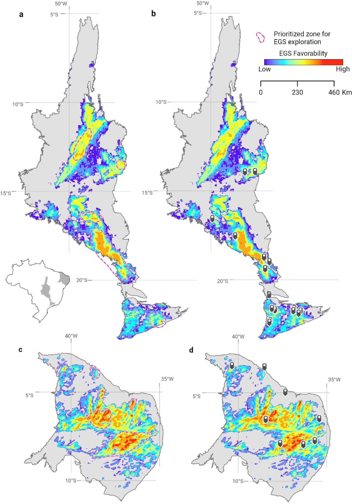

Integrated assessment and prospectivity mapping of geothermal resources for EGS in Brazil

Resumo em Português
Estudos relacionados a recursos geotérmicos no Brasil têm sido realizados principalmente pelo Observatório Nacional. Com base nos resultados disponíveis, vastas áreas do Brasil foram delimitadas com fluxo de calor superficial superior a 60 mW/m² e temperatura em excesso acima de 100 °C a profundidades entre 3 e 6 km. A natureza da fonte de calor e o modo de dissipação térmica nessas áreas são em grande parte desconhecidos. Os recursos geotérmicos potencialmente associados a essas áreas podem ocorrer em aquíferos sedimentares quentes (HSA) e em unidades de rocha quente seca (HDR), hospedados respectivamente em bacias sedimentares intracratônicas e em granitos de alta produção de calor radiogênico (HHPG).O foco deste estudo é a identificação de recursos de alta entalpia (acima de 150 °C) em HHPG, que independentemente de suas propriedades hidrológicas (porosidade, permeabilidade) poderiam ser considerados como alvos potenciais para Sistemas Geotérmicos Estimulados (EGS). As províncias estruturais de Tocantins e Borborema foram escolhidas como regiões piloto com base tanto na indicação de ocorrência de HDR quanto na riqueza de informações georeferenciadas de acesso aberto. Um banco de dados abrangente foi compilado e processado em SIG, incluindo geologia, falhas, tipologia de solos, calor radiogênico, fluxo de calor e gradiente geotérmico de poços, localizações de fontes termais, levantamentos aerogeofísicos de gamaespectrometria e magnetometria, levantamentos gravimétricos terrestres e localizações de sismos.Em paralelo, diversos fatores críticos foram definidos principalmente para identificar e caracterizar os HHPG mais promissores sob rochas sedimentares isolantes para EGS, agrupados em três categorias principais: "fonte térmica", "isolamento térmico" e "vias ativas". Na ausência de dados exploratórios sobre EGS existentes no Brasil, esses fatores críticos foram utilizados em três fluxos de trabalho separados para desenvolver um modelo baseado em conhecimento especializado (lógica fuzzy) visando aprimorar o conhecimento sobre a prospectividade dos recursos geotérmicos. O modelo desenvolvido foi adicionalmente testado para sua validação, e a abordagem selecionada é esperada ser aplicável ao mapeamento de áreas com potencial para EGS em outras regiões com geologia similar e bancos de dados georeferenciados de acesso aberto.